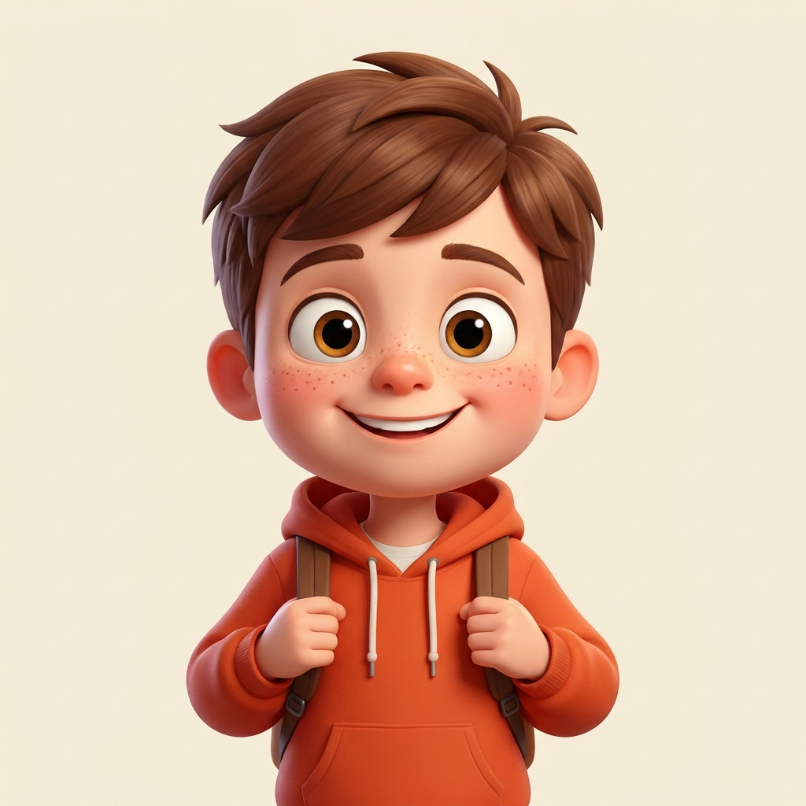

Kick off with a football game that teaches left and right.

Oliver kicks with his right foot. Learn which is left and which is right,
then sort, trace and follow the arrows to the goal.
Stand up together first. Wave your right hand, then your left. Hop on your right foot, then your left. Point right, then left. Do this before any page so left and right live in the body, not just on paper.
On every page, left is the side of your left hand and right is the side of your right hand. Rest both hands flat on the table with the page in the middle. Now the page and the body agree, and the sorting makes sense.
The kicking foot. Ask your child which foot they would kick a ball with. For most children that is the right foot. Tap that foot and say right, tap the other and say left. Come back to the kicking foot whenever they are unsure. A body memory beats a rule every time.
Sorting mat cards. LEFT side: left arrow, hand pointing left, car facing left, left football boot,
footballer kicking left, signpost pointing left.
RIGHT side: right arrow, hand pointing right, car facing right, right football boot, footballer
kicking right, signpost pointing right.
Every card shows a small arrow in the top corner pointing to its correct side, so a stuck child can
self check. Six cards belong on the left and six on the right.
One big left and right sorting mat, twelve cards to cut out and sort, a which hand tracing and pointing page, and a follow the arrows path to the goal. Print the whole set, or just the page you need today. Laminate the mat and reuse it again and again.
Goal for a winner: every card on the correct side, with no peeking at the corner arrow until you have had a good try.
A grown up reads each one. Do the action, then tick the box when you get it right. Take it slowly, this is a warm up not a race.
Say each arrow out loud as you trace: right, then left, then right into the goal.
Play again: this time you be the coach and call the turns while a grown up traces. Swap over and see who can call left and right the fastest.
Loved playing with Oliver? He has a free follow on for you. Grab the Up and Down and Front and Back pack, a print and play set of position games in the same football style. It is our thank you for printing this one.
Made by Guided Childhood, the UK platform helping families raise confident kids in a digital world. If your player loved learning left and right, a kind review on Etsy helps another family find it. Thank you.
My colour is coral. Try warm coral and orange for the boots, the arrows and the car. Green looks brilliant on the signposts and the pitch. Leave the football white with black patches so it looks like a real match ball.
Start soft, like a gentle first touch. Press lightly and lay down a light layer, then go over it again to build it up. Light to strong always looks better than pressing hard, and it never tears the paper.
Colour the big shapes first, like the car body or the hand you traced, then move to the small bits like the boot laces and the wheels. Big to small keeps your page tidy and your hand relaxed.
Follow the bold black outlines and slow down at the edges, like slowing the ball before a shot. If you wander over a line, no worry at all. Even top players miss. Your page, your rules.
Colour the left cards in one colour and the right cards in another. Then you can spot left and right in a flash when you sort them. When every page is bright, you have a set you made your own. Top work, team.